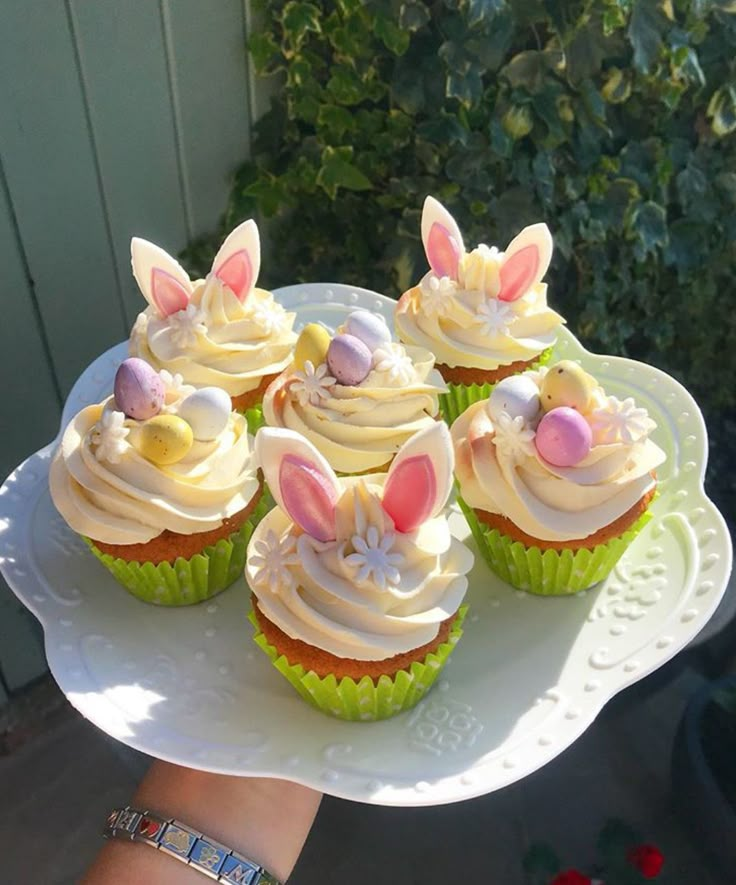
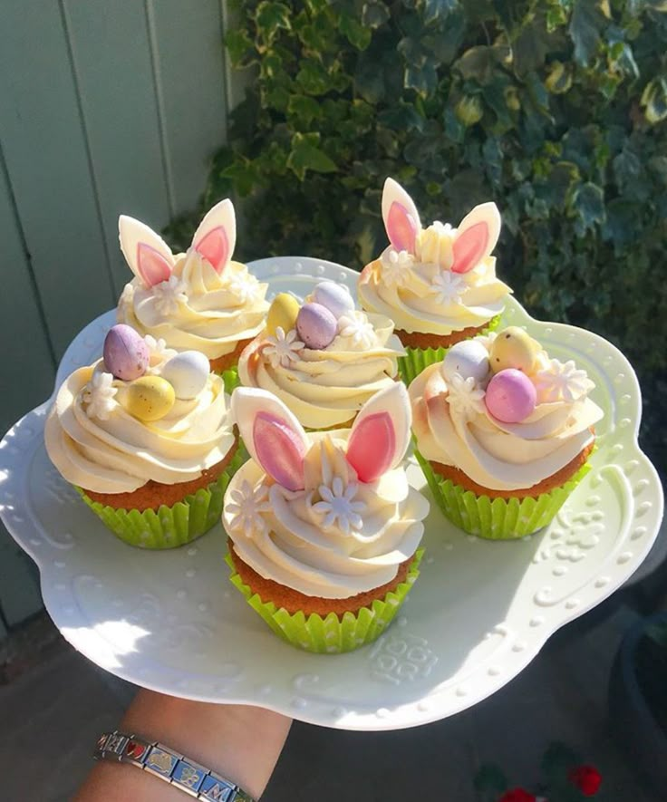

Évènement
Toronto Cupcake propose des cupcakes personnalisés pour les événements d'entreprise, avec les éléments suivants : Personnalisation complète : Reproduction de logos, couleurs et slogans d’entreprise sur fondant comestible. Qualité supérieure : Préparation quotidienne avec les meilleurs ingrédients. Service adapté : Convient à tous types d’événements (lancements de produits, team building, salons professionnels). Présentation professionnelle : Emballages et présentoirs personnalisés selon le thème de l’entreprise. Livraison fiable : Service dans tout Toronto et la région du Grand Toronto (incluant Mississauga, Vaughan, Scarborough). Les avantages incluent la conception de logo personnalisé, des graphiques comestibles de qualité, des options flexibles de saveurs et couleurs, et un service client exceptionnel. Contact : Amérique du Nord : +1 877 334-9464 International : +001 647 478-946 Email : inquiry@torontocupcake.com
 
